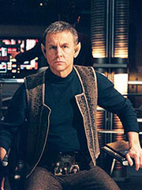
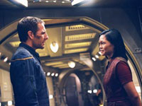
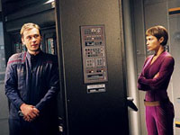
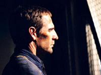
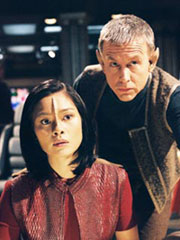
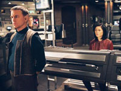
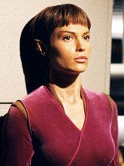

| MANCHETE
DO EPISDIO
Detour
em forma de dj vu traz descendentes da NX-01
Episdio anterior
| Prximo episdio Sinopse:  No
que se prepara para entrarem no corredor subespacial que Degra os instruiu a utilizar
para chegarem a tempo a reunio do Conselho Xindi, Archer e sua tripulao tem
que considerarem outro problema alm da espcie que controla o corredor, os Kovaalanos.
No caso, uma outra nave da Frota se aproxima da Enterprise, e da classe NX. Especulaes
a respeito se poderia se tratar da NX-02 Columbia so rapidamente colocadas de
lado aps eles detectarem que aquela nave , nada mais, nada menos do que a prpria
Enterprise.
O Capito Lorian, desta outra NX-01, os instrui a alterarem
o curso, pronto. Aps se encontrar com Archer a bordo da Enterprise deste, Lorian
o informa que a misso deles no ir ter sucesso, pois aps Archer levar a Enterprise
ao corredor, eles iro voltar no tempo 117 anos, sendo que esta a "origem"
desta Enterprise que Lorian comanda. Eles tem estado na Expanso Dlfica por este
tempo todo, e esto ali naquele momento para impedirem que isto ocorresse em primeiro
lugar, pois a inteno original deles, de destruir a sonda Xindi original, no
teve sucesso. Assim, o que Lorian decidiu fazer providenciar para que Archer
consiga de fato chegar at a reunio com o Conselho Xindi. Para isto, eles pretendem
implantar algumas modificaes na Enterprise atual para que esta possa manter
altas velocidades de dobra alm da capacidade nominal da nave, e ento no precisarem
usar o corredor subespacial. Archer demonstrar estar reticente a acreditar em
toda aquela histria, mas Lorian pede para Phlox confirmar sua identidade e de
sua XO, Karyn Archer, no caso, bisneta de Archer, sendo que Lorian filho de
T'pol e Trip. Isto feito, Archer decide seguir as recomendaes de Lorian.
Enquanto as tripulaes trabalham, acontece boa interao entre ambos os
grupos, com a esperada troca de informaes sobre quem-fica-com-quem; Trip tambm
gosta de interagir com seu filho meio-vulcano, da mesma maneira que Archer com
sua bisneta (ele se casaria com uma alien que resgataram anos antes), enquanto
Mayweather aprende que iria acabar com a Cabo McKenzie, do MACO, enquanto Reed
descobre que iria continuar solteiro, e Phlox teve bastante filhos. Archer tambm
convidado por Karyn a conhecer a idosa T'pol, que depois de anos de convivncia
com humanos, demonstra muita felicidade em poder rever seu antigo Capito, e ela
pede para Archer entregar um PADD para a sua jovem contraparte.

A informao no PADD importante, e Archer informado pela jovem T'pol que a
sua verso idosa no acredita que o plano de Lorian ir funcionar, pois encontrou
problemas nos clculos matemticos dele a respeito das modificaes, o que poderia
resultar na destruio da nave. No lugar, a idosa T'pol acredita que modificaes
diferentes poderiam fazer com que a Enterprise conseguisse utilizar o corredor
espacial sem ser arremessada ao passado. Archer confronta Lorian a respeito destas
informaes, e que seguiro as recomendaes de T'pol. lorian faz objeo a isto,
e secretamente bola uma alternativa para que a Enterprise consiga ir at o encontro
com o Conselho. Archer, contudo, acaba descobrindo a agenda de intenes de lorian,
e invariavelmente, ambas as Enterprise se enjagam em combate. Karyn, contudo,
consegue demonstrar para lorian o absurdo da situao em que acabaram se metendo,
com eles tendo que lutar contra sua prpria famlia passada.
Archer se
encontra novamente com Lorian, e este explica para Archer que se preparou a vida
inteira para impedir o ataque original Xindi, e no conseguiu tomar a deciso
de usar a nica opo que lhe restava para conseguir este feito, que teria sido
colocar a Enterprise em rota de coliso com a sonda Xindi, o que possibilitou
a sonda atacar a Terra. Archer afirma que compreende a situao, e que eles precisam
se focar agora em conseguirem fazer com que viagem seguros pelo corredor subespacial
para conseguir prosseguir com a misso, e que precisam trabalhar juntos para isto.
Com os esforos retomados, T'pol acaba finalmente encontrando sua idosa contraparte,
a qual afirma para a jovem que os efeitos emocionais do uso do trellium jamais
iro passar completamente, e que Trip pode a ajudar a lidar com isto.
 Com
as modificaes completas, as naves se aventuram no corredor, com a Enterprise
de Lorian servindo de ala para a de Archer, de modo a oferecer cobertura contra
os ataques que os Kovaalanos lanam contra eles assim que entram no corredor.
Assim que a Enterprise consegue com sucesso passar pelo corredor, eles no tem
mais notcias da Enterprise de lorian. T'pol acredita que eles no sobreviveram
a batalha, mas Archer especula que como eles conseguiram passar com sucesso pelo
corredor, aquela Enterprise nunca teria existido em primeiro lugar, uma vez que
a histria foi modificada, o que ainda assim no explica o fato de que todos eles
ali ainda tem as memrias sobre Lorian e sua tripulao alternativa.
Comentrios:
"E"
tem ecos muito fortes de outro episdio de Jornada nas Estrelas: "Children
of Time", de Deep Space Nine. Se isso no o suficiente para
qualific-lo como um mau episdio, ao menos cria um incmodo senso de dj vu.
Uma pena, pois no fosse essa repetio de premissa, "E" poderia
ser um dos segmentos mais interessantes da temporada.

No estilo tpico de Brannon Braga, o enredo todo baseado num "high-concept"
-- a Enterprise encontra a si mesma, ocupada por uma tripulao de descendentes
de Archer e cia. Liderados por Lorian, eles contam que a NX-01 foi atirada no
passado por conta da deciso do capito de atravessar o corredor subespacial indicado
por Degra. Mais de cem anos depois, seus descendentes esto l para impedir que
Archer cometa o erro mais uma vez.
Para quem no se lembra, ou no viu,
"Children of Time" conta mais ou menos a mesma coisa. Naquele
caso, a Defiant chega a um planeta e, ao atravessar uma determinada barreira de
energia que envolve aquele mundo, ela contata um grupo de colonos que supostamente
seriam descendentes de Sisko, Dax, Worf e cia. Eles alertam para o que os criou
--uma tentativa posterior de deixar o planeta levou a Defiant de volta barreira,
que atirou a nave no cho e para trs no tempo. Os tripulantes ento resolveram
ocupar aquele mundo e criar a colnia em que eles esto vivendo.

Tanto no caso de Enterprise quanto no de Deep Space Nine, como no
poderia deixar de ser, os "descendentes" no esto sendo totalmente
honestos com os tripulantes da Frota Estelar. No caso do sculo 24, eles na verdade
tentavam induzir a Defiant a voltar no tempo e garantir a existncia deles;
no caso do sculo 22, a motivao mais nobre: Lorian e seus comandados querem
impedir que a NX-01 cometa o mesmo erro e volte no tempo, o que a impediria de
concluir sua misso e salvar a Terra.
De toda maneira, o paralelismo
muito grande para passar despercebido. E, como no caso de DS9, o que
mais se destaca aqui no a histria em si --apenas um enredo conveniente execuo
do "high-concept"--, mas os potenciais desdobramentos de personagens.
no mnimo interessante travar contato com Lorian, filho de T'Pol e Tucker, e
ver sua interao com seus pais. E T'Pol, em dose dupla (ela a nica sobrevivente
da antiga tripulao da "outra" Enterprise), tem um papel crucial no
episdio.

at irnico que um "high-concept" sirva nica e exclusivamente para
desenvolver os personagens, mas exatamente o que acontece aqui. Descobrimos
que T'Pol est condenada a viver sem o controle total de suas emoes (efeito
irreparvel de seu vcio por trellium) e que Trip pode ter um papel pessoal importante
em sua vida. O engenheiro-chefe, que alm de estar apaixonado humano, abraa
com facilidade esse potencial futuro, em que a Vulcana e ele esto juntos e tm
um filho, mas T'Pol prefere pensar que as coisas no necessariamente sero assim.
De toda forma, a tenso produzida o mais interessante disso tudo.
Trip
tambm tem uma interao interessante com Lorian, que em tese seria seu filho,
mas na verdade o engenheiro o v como uma lembrana de seu prprio pai. A dinmica
reforada (e colocada prova) quando Lorian decide roubar os injetores da Enterprise
e acaba sendo obrigado a tontear Tucker na engenharia.
 Hoshi,
Mayweather e Malcolm tm um momento especial, em que comentam seu "futuro"
na "outra" Enterprise e Reed acaba revelando que ele nunca se casou.
O fato de que, ao final da cena, ele puxa uma cadeira para uma tripulante desacompanhada,
tentando mudar seu "destino", arranca risos. Phlox passa totalmente
despercebido (a referncia de que muitos dos atuais tripulantes "descendem"
dele no suficiente para caracterizar desenvolvimento de personagem). E, curiosamente,
Archer no bem aproveitado.
Embora ele tenha deixado descendentes,
sua relao com sua bisneta pouco relevante, fria e desinteressante. Certamente
a presena dela poderia ter ajudado mais, no s para confrontar Lorian e sua
deciso de impedir a todo custo que a NX-01 de Archer entre no corredor mas tambm
para ajudar o capito a tomar a deciso certa. Faltou interao entre os dois.
No fim, apesar da qualidade e dos efeitos especiais, no se pode negar que
"E" mais um detour do que qualquer outra coisa: um
episdio suprfluo no contexto do arco e que poderia muito bem ter sido suprimido.
Ainda assim, ele introduz o que seria a reta final da saga Xindi, a trs episdios
do fim da temporada. Citaes:
Trip - "It's real romantic when you
put it like that."
(" bem romntico quando voc cita deste
jeito.")
Lorian - "My father is a resourceful man. he'll
be able to fabricate new injectors."
("Meu pai um homem habilidoso.
Ele ser capaz de fabricar novos injetores.")
Lorian - "You
mission is over Captain, it was the only logical decision."
("Sua
misso acabou, Capito, era a nica deciso lgica.")
T'Pol -
"Trip can be an outlet for these emotions."
("Trip pode
mesmo ser uma fonte para estas emoes.")
Trivia:
 A produo do episdio se estendeu de 3 a 11 de fevereiro, incluindo filmagens
em uma segunda unidade no dia 13. A fotografia principal incluiu cenas na segunda
nave, alm da prpria NX-01 original e a nave de Degra.
A produo do episdio se estendeu de 3 a 11 de fevereiro, incluindo filmagens
em uma segunda unidade no dia 13. A fotografia principal incluiu cenas na segunda
nave, alm da prpria NX-01 original e a nave de Degra.
Elenco convidado neste episdio inclui Randy Oglesby e Rick Worthy, em seus papis
de Xindis, alm de Bob Morrisey, que introduz um novo personagem, um Capito Rptil.
Uma participao especial tambm acontece com o animador Seth McFarlane, criador
da srie Family Guy.
Ficha
tcnica: Escrito
por Michael Sussman
Direo de Roxann Dawson
Exibido em
05/05/2004
Produo: 073 Elenco: Scott
Bakula como Jonathan Archer
Jolene
Blalock como T'Pol
John Billingsley
como Phlox
Anthony Montgomery
como Travis Mayweather
Connor Trinneer
como Charlie 'Trip' Tucker III
Dominic
Keating como Malcolm Reed
Linda
Park como Hoshi Sato Elenco
convidado: David Andrews como
Lorian
Randy Oglesby como Degra
Tucker Smallwood como Xindi-Humanide
Rick Worthy as Xindi-Preguia
Tess Lina como Karyn Archer
Tom Schanley como Greer
Steve Truitt como Tripulante 1
Sinopse,
trivias e ficha tcnica por Leandro
M.Pinto
Episdio anterior
| Prximo episdio
|